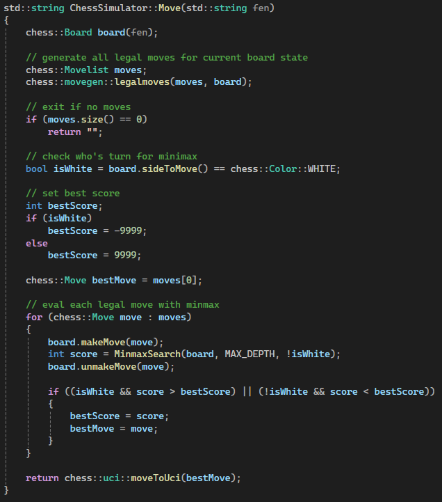
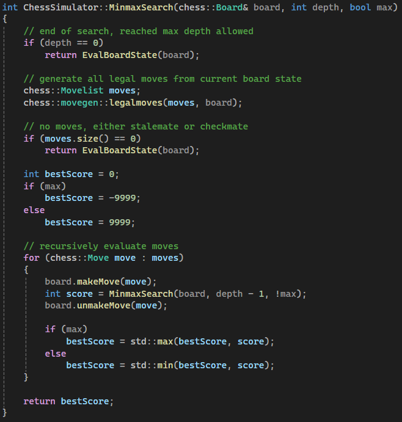
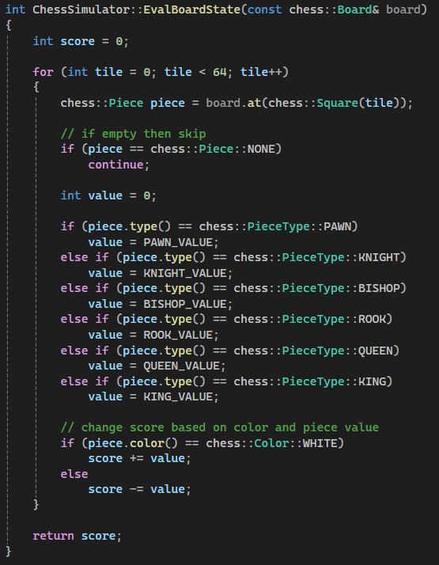
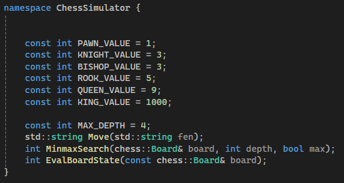
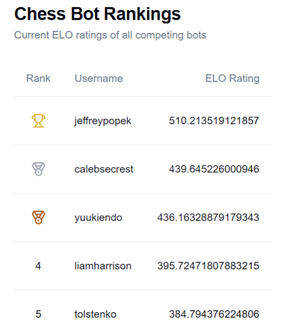

Min-Max Chess Bot
This project is a straightforward chess engine implemented in C++, designed to make intelligent move decisions using the Min-max algorithm. It utilizes Disservin’s open-source chess library for board logic, including move generation, FEN parsing, and rule enforcement. The goal here isn’t to build a world-class chess AI, but to demonstrate how tree search and evaluation logic can work together to make competent chess decisions.
The engine provides one primary interface: a function that accepts a FEN string and returns the best legal move in UCI format. When called, it generates all legal moves for the current player and evaluates each one using Min-max search. The move that leads to the most favorable outcome, based on a simple material evaluation, is chosen and returned.
Moving: Evaluating All Legal Options
This function serves as the main decision-making point for the engine. It starts by setting up a board from the given FEN string. All legal moves are generated using the chess library. For each possible move, the engine simulates the move on the board, evaluates the resulting position using a recursive Min-max function, and then reverts the board back to its previous state. After comparing the scores of all possible moves, it picks the best one based on whether it's White’s or Black’s turn.

Min-Max: Recursive Tree Evaluation
The core of the decision-making is handled by a recursive Min-max algorithm. If the depth limit is reached or there are no legal moves left, the function evaluates the board statically. Otherwise, it generates all legal moves, tries each one, evaluates the outcome recursively, and chooses the best result depending on whether the current function call is trying to maximize or minimize the score. This back-and-forth between maximizing and minimizing mimics how two players would try to outplay each other in an actual chess game.

Evaluating the Board
The evaluation function gives a score to a board state based on material value alone. Each piece type has a predefined numeric value, such as 1 for pawns, 3 for knights and bishops, 5 for rooks, 9 for queens, and a high value for the king. The function loops through every tile on the board, checks for a piece, and adjusts the score based on the piece’s type and color. White pieces increase the score and black pieces decrease it. A positive score means White is ahead, and a negative score means Black has the advantage.

Constants and Configuration
The engine uses a fixed depth of 4 for the Min-max search. This value determines how many moves ahead the engine will look when making a decision. Increasing this number leads to better decisions but increases computation time. I kept the depth value low to keep computation time under 5 seconds due to the competition rules. Piece values are defined as constants, making it easy to tweak or balance if needed.

What I Learned
This project is a simple yet functional example of how a chess engine can be built using recursive decision logic and basic evaluation. It combines a third-party library for board rules with custom logic for searching and scoring positions. While simple, it forms a solid foundation for learning how chess AIs work. At the end of the competition I placed 3rd in the competition but still achieved the 1st place spot on the leaderboards. This competition showed me that a simple and efficient AI can consistently beat more complicated and complex AIs if they don't have strong foundations.
